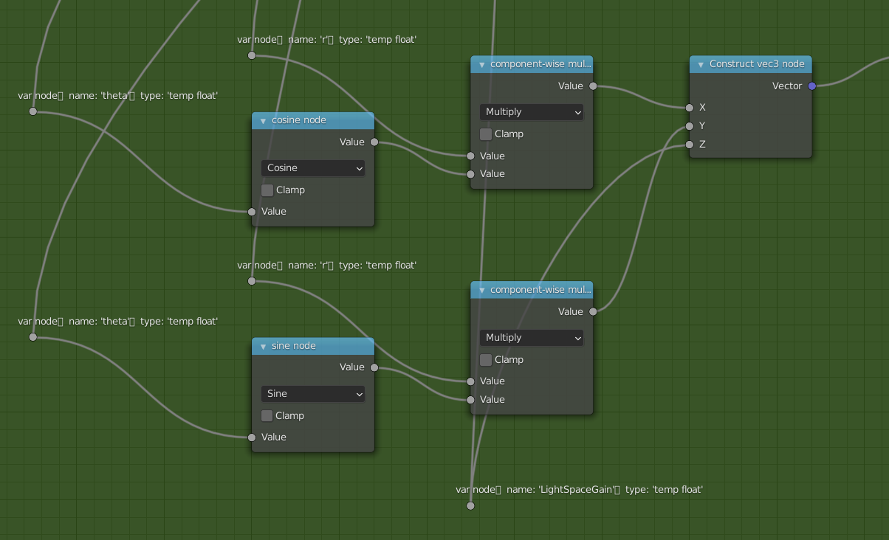

<div class="modal fade" id="ShaderToNodes_modal" tabindex="-1" aria-labelledby="ShaderToNodesLabel" aria-hidden="true">
	<div class="modal-dialog modal-xl">
		<div class="modal-content">
			<div class="modal-header">
				<h5 class="modal-title" id="ShaderToNodesLabel">Shader To Nodes</h5>
				<button type="button" class="btn-close" data-bs-dismiss="modal" aria-label="Close"></button>
			</div>
			<div class="modal-body d-flex justify-content-center">
				<div class="col-md-9">

		            <p>
		            	Node graphs are a standard way for artists to author custom materials. However, it is difficult to manually build and maintain node graphs that implement complex math expressions. 
		            </p>
		            <p>
		            	These expressions are more easily written in custom shader code, but not all rendering systems support custom code (e.g. Blender EEVEE). 
		            </p>
		            <p>
		            	Furthermore, shader code written in one language which can not always be compiled to all platforms. Node graphs can be translated to shaders for multiple plaftorms (e.g. Maya → viewport + Arnold, Blender → EEVEE + Cycles, UE4 → PC, console, and mobile).
		            </p>
		            <p>
		            	To allow me to write shader code that can run in Blender EEVEE, I am writing and automatic system to build a node graph from shader code. Below is a simple expression in GLSL code, and its corresponding node graph output from my system is shown underneath.
		            </p>
		            <p>
	            		I use <a href="https://github.com/KhronosGroup/glslang">glslang</a> to compile the GLSL into an AST description. I then parse this AST output into an intermediate AST structure in memory, before converting this AST into a node graph represented as a set of nodes and connections between them. Finally, I reconstruct this node graph in the DCC (currently Blender) using its node scripting API.
	            	</p>

		            <p>	
		            <pre class="code code-wrap"><code>// GLSL expression
vec3(
	r*cos(theta),
	r*sin(theta),
	LightSpaceGain
)

// glslang AST output
0:102        Construct vec3 ( temp 3-component vector of float)
0:99          component-wise multiply ( temp float)
0:99            'r' ( temp float)
0:99            cosine ( global float)
0:99              'theta' ( temp float)
0:100          component-wise multiply ( temp float)
0:100            'r' ( temp float)
0:100            sine ( global float)
0:100              'theta' ( temp float)
0:101          'LightSpaceGain' ( temp float)</code></pre>
		            </p>

					<a href="../assets/images/Nodes.png">
					
					</a>
					<figcaption class="figure-caption p-1">
						Node graph generated from above GLSL expression.
					</figcaption>

				</div>
			</div>
			<div class="modal-footer">
				<button type="button" class="btn btn-secondary" data-bs-dismiss="modal">Close</button>
			</div>
		</div>
	</div>
</div>
